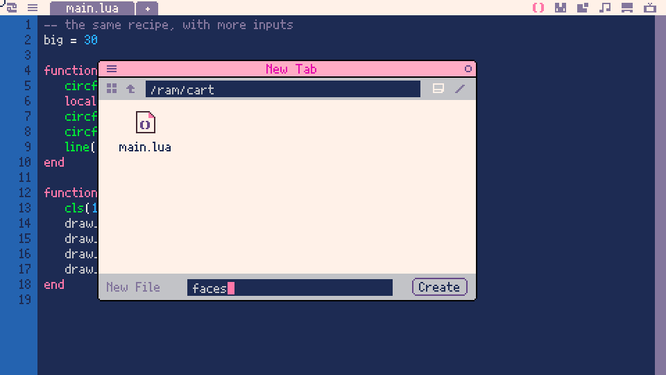
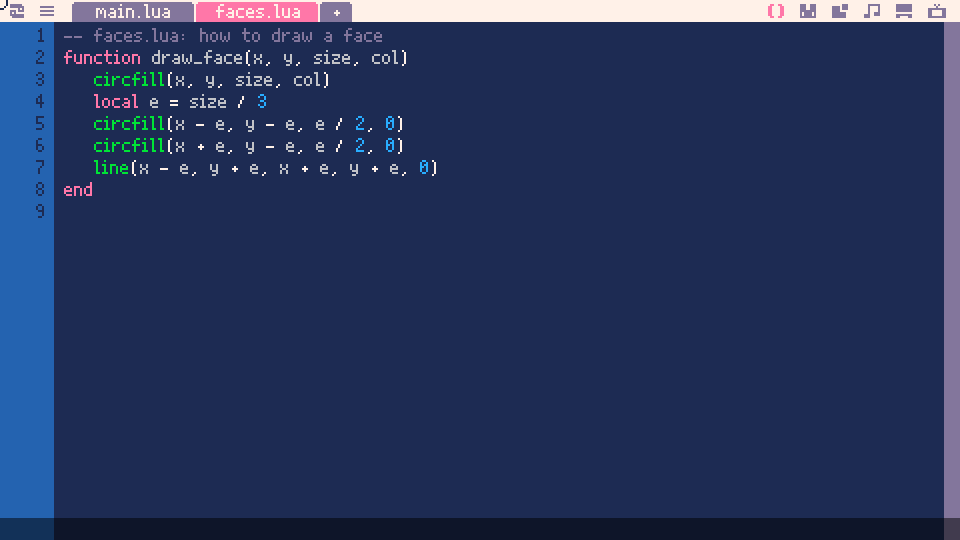
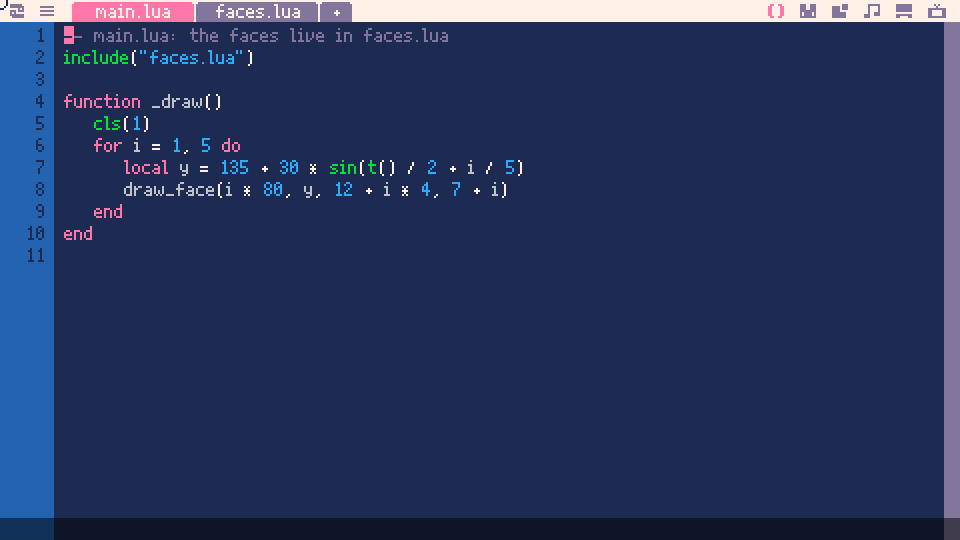

demotron / beginner basics / 08
Functions and files
Defining functions, parameters, return values, local variables, functions as values, and splitting a game across files.
1-- one recipe, four faces
2function draw_face(x, y)
3 circfill(x, y, 20, 10)
4 circfill(x - 7, y - 5, 3, 0)
5 circfill(x + 7, y - 5, 3, 0)
6 line(x - 8, y + 8, x + 8, y + 8, 0)
7end
8
9function _draw()
10 cls(1)
11 draw_face(90, 135)
12 draw_face(190, 135)
13 draw_face(290, 135)
14 draw_face(390, 135 + 40 * sin(t() / 2))
15end1-- the same recipe, with more inputs
2big = 30
3
4function draw_face(x, y, size, col)
5 circfill(x, y, size, col)
6 local e = size / 3
7 circfill(x - e, y - e, e / 2, 0)
8 circfill(x + e, y - e, e / 2, 0)
9 line(x - e, y + e, x + e, y + e, 0)
10end
11
12function _draw()
13 cls(1)
14 draw_face(70, 135, 20, 10)
15 draw_face(190, 135, big, 9)
16 draw_face(340, 135, 50, 12)
17 draw_face(440, 50, 10, 8)
18end1-- a function that answers with a number
2size = 40
3
4function dist(x1, y1, x2, y2)
5 return sqrt((x2 - x1) ^ 2 + (y2 - y1) ^ 2)
6end
7
8function _update()
9 mx, my = mouse()
10 d = dist(mx, my, 240, 135)
11end
12
13function _draw()
14 cls(1)
15 col = 12
16 if d < size then col = 8 end
17 circfill(240, 135, size, col)
18 line(mx, my, 240, 135, 6)
19 print("distance: "..flr(d), 8, 8, 7)
20end1-- two counters, both called n
2n = 0
3
4function count_global()
5 n += 1
6 return n
7end
8
9function count_local()
10 local n = 0
11 n += 1
12 return n
13end
14
15function _draw()
16 cls(1)
17 print("global n: "..count_global(), 180, 120, 11)
18 print("local n: "..count_local(), 180, 140, 8)
19end1-- three drawing functions, kept in a list
2function dots(x, y)
3 for i = 0, 5 do
4 circfill(x - 75 + i * 30, y, 10, 12)
5 end
6end
7
8function rings(x, y)
9 for r = 10, 70, 12 do
10 circ(x, y, r, 9)
11 end
12end
13
14function cross(x, y)
15 rectfill(x - 70, y - 8, x + 70, y + 8, 8)
16 rectfill(x - 8, y - 70, x + 8, y + 70, 8)
17end
18
19styles = {dots, rings, cross}
20pick = 1
21
22function _update()
23 if btnp(4) then
24 pick = pick % #styles + 1
25 end
26end
27
28function _draw()
29 cls(1)
30 local f = styles[pick]
31 f(240, 135)
32 print("style "..pick.." of "..#styles, 8, 8, 7)
33 print("press o (z) for the next one", 8, 20, 6)
34end1-- main.lua: the faces live in faces.lua
2include("faces.lua")
3
4function _draw()
5 cls(1)
6 for i = 1, 5 do
7 local y = 135 + 30 * sin(t() / 2 + i / 5)
8 draw_face(i * 80, y, 12 + i * 4, 7 + i)
9 end
10end1-- over to you: a face that follows the mouse
2function draw_face(x, y, size, col)
3 circfill(x, y, size, col)
4 local e = size / 3
5 circfill(x - e, y - e, e / 2, 0)
6 circfill(x + e, y - e, e / 2, 0)
7 line(x - e, y + e, x + e, y + e, 0)
8end
9
10function _update()
11 mx, my = mouse()
12end
13
14function _draw()
15 cls(1)
16 draw_face(mx, my, 20, 10)
17 -- your ideas go here!
18end1 Defining a function
We've been writing functions since Basics 2: _update and _draw are functions, and Picotron calls them for us. In this lesson we write our own, call them ourselves, give them inputs and answers, and finish by splitting a program across two files.
Lines 2 to 7 draw a face: a yellow circle, two black eyes and a line for a mouth. function draw_face(x, y) gives that work a name, and everything down to the matching end is what it does. A function is a recipe, and writing one down bakes nothing. It just teaches Picotron a new word.
The work happens when the function is called. draw_face(90, 135) on line 11 runs it with x as 90 and y as 135. Lines 11 to 14 call it four times, so one recipe gives us four faces. The last call works out its y from t(), which is why that face bobs: a function takes any number, including one worked out on the spot.
The reason to bother shows up when something changes. Bigger eyes means editing one line in draw_face, and every face gets them. With four copies of the drawing code it would be four edits, and sooner or later we'd miss one.
Try this
- Move the whole
draw_facefunction to the very bottom of the file, after_draw. Predict: will it still work? Then put a call,draw_face(240, 40), on a line of its own at the very top of the file, before the function. What happens now, and what's different about the two places? - Draw a row of ten faces using a
forloop from Basics 3, with only onedraw_facecall inside it. - Give the recipe a nose, or ears, or a hat. How many lines did you have to change to give every face one?
2 Parameters
Every face on slide 1 was the same size and colour, because draw_face only had two blanks to fill in: x and y. Here it has four, draw_face(x, y, size, col). Each name between the brackets is a parameter, a blank the caller fills in.
The values in a call are handed over in order. In draw_face(340, 135, 50, 12) the first becomes x, the second y, the third size and the fourth col. Everything else is worked out from those: the eyes sit a third of size from the middle, and each eye's radius is half of that again.
Parameters are ordinary variables that the caller fills in, and each call gets a fresh set. That's how four calls draw four different faces.
Drag the big slider. It changes the variable big, which the second call passes as its third value, so inside the function it arrives as size. The function only ever sees the number; it has no idea it came from a variable called big. (Line 6 says local. Slide 4 explains it.)
Try this
- What happens if you leave some numbers out, as in
draw_face(240, 135)? Predict, then try it, and read the error message. Which line does it point at, and which name does it complain about? - Rename
bigtosizeon line 2 and in the call on line 15, but don't touch the function. Now there are two things calledsize. Will the picture change? Predict before you run it, then explain why. - Add a fifth parameter,
happy. When it'strue, draw a smile (two short lines that tilt up at the ends will do); otherwise keep the straight mouth.
3 Return values
Click on the cart and move the mouse over it. The line follows the pointer, and the circle turns red when the pointer is inside it.
So far our functions have done things. A function can also answer a question. dist takes two points and works out how far apart they are, with Pythagoras' theorem from school, and return hands the answer back to whoever called it. Picotron runs the function and puts its answer where the call was, so line 10 stores the distance in d as if we'd typed the number.
Picotron's own functions do this all the time: sqrt returns a square root, and flr a number rounded down. mouse() returns several values at once: the pointer's x and y, which buttons are down, and two more for the scroll wheel. Line 9 keeps the first two in mx and my and drops the rest.
With the answer in d, the decision is one comparison: if d is less than the circle's radius, the pointer is inside. Drag the size slider and the check grows with the circle, because both use the same variable.
Try this
- What does a function hand back if it never says
return? Write one that doesn't, such asfunction hello() end, then predict and check:print(hello(), 8, 20, 7). Now try joining it onto some text with... - Add a second circle somewhere else that turns red on its own. You can call
distagain with different numbers, without writing it again. - A function can return two answers, like
mouse()does:return a, b. Writehalfway(x1, y1, x2, y2)that returns the point halfway between two points, catch both answers withhx, hy = halfway(...), and draw a dot there on the line.
4 Local and global variables
Two counters, both called n, and they behave completely differently.
The n on line 2 is a global. It's made once, when the program starts, and lasts as long as the program runs. Every frame, count_global adds 1 to it and returns it, so it climbs by 60 a second. Any code anywhere can read it or change it.
The n on line 10 is a local. local makes a new variable that belongs to this one function, from that line to the function's end. Each call makes a fresh one, sets it to 0, adds 1 and returns 1, and the local is thrown away when the function finishes. So it says 1, forever.
count_local never touches the global n: inside the function, the local n hides the global one. Without local, a function's variables are globals, shared with the whole program. In a demo this size that's fine. In a bigger game, two functions that both happen to use a name like x or i start changing each other's numbers, and the bug shows up somewhere far from either of them. So I make a function's working variables local out of habit, and keep globals for what the whole game needs to remember, such as the score.
(Parameters are locals too, which is why slide 2's size couldn't get mixed up with anything outside the function.)
Try this
- Delete the word
localfrom line 10. Predict what both counters will show now, then run it. Can you explain every number you see? - This bug catches a lot of people. Add this to slide 5 of Basics 4 (the four-way mover) and call
draw_grass()at the end of_draw:function draw_grass() for i = 0, 15 do x = i * 32 line(x, 269, x, 255, 11) end end. Hold an arrow key. What happens to the circle, and why? Fix it with one word. forloops make their counter local all by themselves. Printiafter afor i = 1, 3 do ... endloop has finished. What do you get? Why is that a helpful thing for Lua to do?
5 Functions as values
Click on the cart and press O (Z on a keyboard) to step through three pictures, each drawn by its own function.
A function is a value, like a number or a string. function dots(x, y) really means "make a function and store it in a variable called dots". So anything we can do with a value, we can do with a function, including putting it in a list.
That's line 19: styles = {dots, rings, cross}. There are no brackets after the names, so nothing is called; the list holds the three functions themselves. In _draw, styles[pick] takes one out of the list and stores it in f, and f(240, 135) calls it, brackets and all. Pressing O changes pick, so a different function gets called. (The % from Basics 3 wraps pick from 3 back round to 1.)
This is how the methods in Basics 7 work. b:update() calls the ball's update, a function stored in one of its fields, just as these three are stored in a list.
Try this
- What's the difference between
{dots, rings, cross}and{dots(), rings(), cross()}? Predict what will go wrong with the second, then try it and read the error. - Add a fourth picture: write its function and add its name to
styles. Which other lines did you have to change? (Think back to Basics 6.) - Functions can be handed to other functions, too. Write
function row(f)that callsfthree times at three differentxpositions, then callrow(rings)androw(dots).
6 Files and include
As a game grows, main.lua gets long, and scrolling through hundreds of lines for the bit we want gets old fast. The fix is a file per idea: the player in one, the enemies in another, the faces in a third. Functions are what make that work, because a function defined in one file can be called from any other.
We'll move slide 2's draw_face into a file called faces.lua. In the code editor, click the small + tab just to the right of the main.lua tab at the top. Picotron opens a New Tab window and asks for a name. Type faces and press Enter (or click Create). There's no need to type the .lua: Picotron adds it.

A new, empty tab called faces.lua appears next to main.lua. Cut the whole draw_face function out of main.lua and paste it in here:

1-- faces.lua: how to draw a face
2function draw_face(x, y, size, col)
3 circfill(x, y, size, col)
4 local e = size / 3
5 circfill(x - e, y - e, e / 2, 0)
6 circfill(x + e, y - e, e / 2, 0)
7 line(x - e, y + e, x + e, y + e, 0)
8endNow click the main.lua tab and put include("faces.lua") at the very top. Press Ctrl + R and the faces are back, drawn by a function that lives in another file. (The code on the left is a new main.lua that draws five faces with a loop; copy it in to see it run.)

include runs another file, top to bottom, at that point in the program. Running faces.lua defines draw_face, so by the time _draw calls it, Picotron knows the word. The file name is looked up from the folder the program runs in, which for the working cartridge is /ram/cart, the same folder the + tab put faces.lua in. Saving the cartridge saves every file in it together.
If you've used PICO-8: Picotron's include is not a copy-and-paste of the file's text. It's an ordinary function that runs the file every time it's called, so include each file once, at the top of main.lua.
The demo on this page is two files as well: this lesson's cartridge has its own faces.lua, and the code on the left is its main.lua, word for word.
Try this
- Move slide 3's
distinto a file of its own,maths.lua, and include that too. Does the order of the twoincludelines matter? When would it? - Misspell the name:
include("face.lua"). Predict what Picotron will do, then run it. Does it tell you what went wrong? Where? includeruns the file every time. Move theincludeline inside_draw. Does it still work? Leave it running for a few seconds and see what Picotron thinks of that.
7 Putting it together
In this lesson we added:
- functions of our own, defined once and called as often as we like
- parameters, for handing a function its inputs
return, for handing an answer backlocal, for keeping a function's working variables to itself- functions as values, stored in variables and lists
include, for keeping code in more than one file
The starter is slide 2's face, following the mouse. Copy it into a new cart in Picotron, then pick an idea below. Next, Basics 9 trades circles for characters drawn by hand in the sprite editor.
Try this
- Push the face to the right edge and it goes half off the screen. Write your own
clamp(v, lo, hi)that returnsv, but never less thanloor more thanhi, and use it to keep the whole face on screen. Then compare it with Picotron'smidfrom Basics 5. Do they always agree? - A function can call itself. Write
branch(x, y, len, a)that draws a linelenlong at anglea(cosandsinhelp; Picotron measures angles in turns, so 0.25 is a quarter of the way round), then callsbranchtwice from the end of that line, each a bit shorter and turned a bit left or right. Grow a tree from the bottom of the screen. What has to stop it calling itself forever? - Take your bouncing balls from Basics 7 and split them up: everything about one ball (making it,
update,draw) intoball.lua, and only the game loop left inmain.lua.
Built with Picotron 0.3.0d.